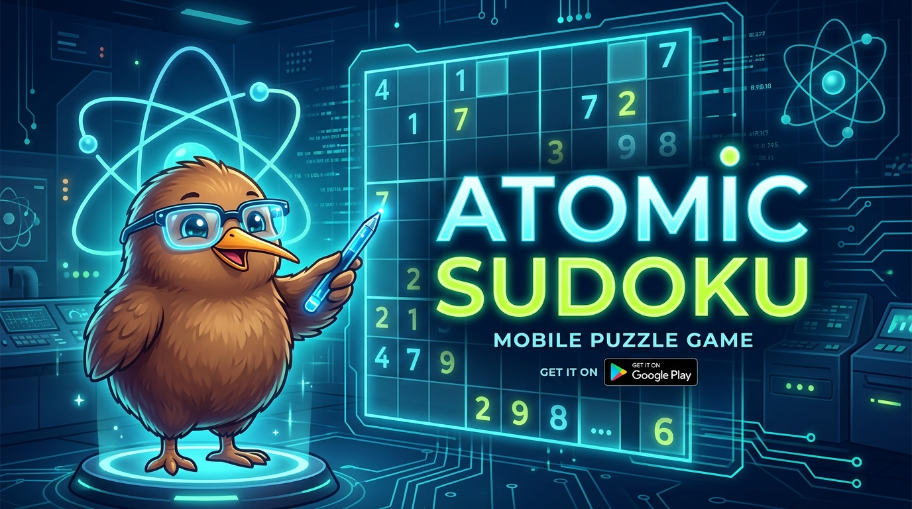

ATOMIC SUDOKU
Sudoku clásico determinista para Android. Diseñado para ofrecer partidas con solución única y verificable, acceso directo al puzzle en segundos, funcionamiento offline total y una estética que respeta la concentración del jugador.
Generador de Seeds Deterministas
Cada puzzle proviene de una semilla algorítmica reproducible (PROTON, ATOMIC, PLASMA, PULSAR, QUASAR). Puedes compartir tu código de partida con amigos para jugar exactamente el mismo tablero.
5 Niveles de Dificultad Gradual
Desde niveles accesibles para calentamiento mental hasta tableros Extremos que requieren técnicas avanzadas de intersección, cadenas y descarte lógico.
Theme Lab & Kiwiko Reactivo
Personaliza tu experiencia con temas visuales contrastados (Hacker Neón, Pinky, Jungla y Modo Clásico) acompañados de Kiwiko el erudito con expresiones dinámicas.
Pausa Segura & Modo Offline
El tablero se oculta automáticamente al pausar para evitar trampas visuales. Funciona 100% sin conexión, sin consumo de datos y sin anuncios.